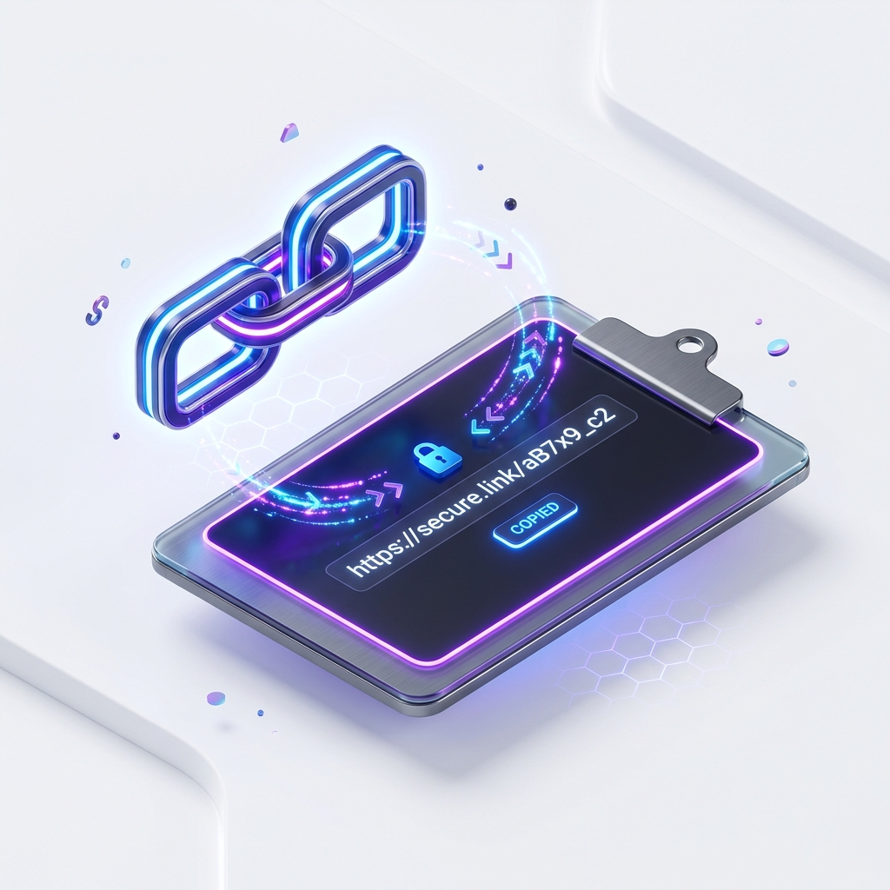

🚀 v2rayN 新手使用教程
💡 导语： Windows 平台上经典的轻量级代理工具，占用内存小。
1
下载与安装软件
前往 Github 下载 v2rayN-Core.zip，解压到一个安全的文件夹中，双击 v2rayN.exe 运行（如果提示需要 .NET 框架请按提示安装）。
2
获取并导入订阅链接
登录机场后台，复制“V2Ray 订阅链接”。在 v2rayN 软件主界面上方点击“订阅”->“订阅设置”，点击“添加”，输入备注，将 URL 粘贴进去并保存。然后回到主界面，点击“订阅”->“更新订阅(不通过代理)”。

3
选择节点与开启代理
更新完成后，节点列表会显示出来。右键点击其中一个节点，选择“设为活动服务器”。最后，右键点击电脑右下角的 v2rayN 托盘图标（蓝色或红色的V字），在“系统代理”菜单中选择“自动配置系统代理”即可。
?
❓ 常见问题排查 (FAQ)
1. 连不上怎么办？
请尝试更新订阅，并检查电脑/手机的时间是否准确（不能有误差）。
2. 国内网站变慢？
请确认客户端处于“规则/分流”模式，而不是全局模式。